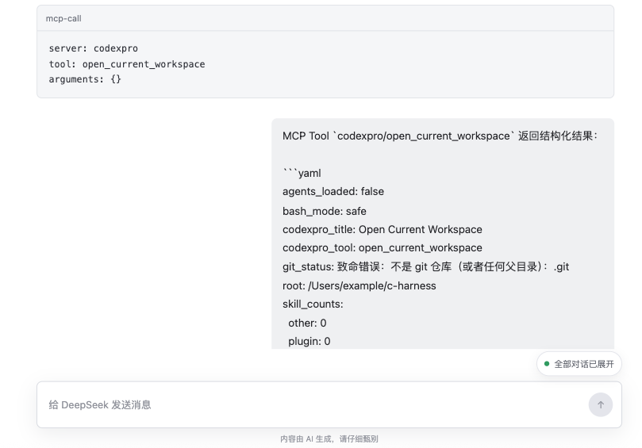

Skill
按需披露本地说明
从 ZIP 导入包含 SKILL.md 和可选 references/ 的 Skill 包。
对话开始只发送 Skill 目录，正文由模型通过显式命令按需读取。
- 本地导入、搜索、覆盖与删除
- Skill 与 Reference 分阶段读取
- 可全局停用，不删除已有内容
Chrome Manifest V3 extension
让网页版大模型在 Chat 模式中，按需读取你主动导入的 Skill 与 Reference， 并在确认后调用你添加的 MCP 服务。

Why c-harness
不必反复复制 Skill 正文、Reference 或工具结果。c-harness 用可见、固定的 Harness 约定，让模型明确请求它此刻真正需要的内容。
Capabilities
从 ZIP 导入包含 SKILL.md 和可选 references/ 的 Skill 包。
对话开始只发送 Skill 目录，正文由模型通过显式命令按需读取。
添加无鉴权 Streamable HTTP MCP 服务。模型先读取服务详情，再按 Tool 名称和结构化参数请求调用； 默认每次调用都由用户确认。
可配置 1–60 秒的最小值与最大值。扩展在每次适用的自动回注前独立随机抽样一个整数秒，
模拟更接近真人操作的回复间隔；首次 Harness 和 MCP 确认后的反馈不延迟，等待期间也可随任务取消。
Workflow
每条用户消息发起一个临时增强任务。扩展只解析正文为严格 YAML mapping 的显式围栏命令， 不从自然语言猜测工具意图。
附带固定协作约定、能力目录和用户原始问题。
模型通过 skill、read 或 mcp 请求必要内容。
mcp-call 默认弹出确认；可信服务可在当前目标网站会话内免重复确认。
扩展回注真实内容与结果，模型继续对话，直到回复中不再包含已识别命令。
MCP call control
模型只有在读取服务详情后才能请求调用 MCP Tool。服务尚未获得当前会话信任时， c-harness 会在页面上展示调用服务、Tool 名称和完整参数，等待你明确选择。
服务：local-dev；Tool：write_file
{
"content": "# Project notes",
"path": "notes.md"
}Real usage example
这份真实对话中，DeepSeek 先使用已导入的视角型 Skill 分析问题，再请求调用本地 开发环境 MCP（如 CodexPro）的文件写入 Tool，将最终内容保存为 Markdown。
Scope
Download & install
当前通过 GitHub Releases 提供适用于 Chrome 114 及以上版本的扩展安装包。
c-harness-*-chrome.zip。chrome://extensions，开启右上角的“开发者模式”。需要 Node.js 22.18.0 及以上、23 以下版本，以及 pnpm 11.10.0。
$ git clone https://github.com/yuczzzzz/c-harness.git
$ cd c-harness
$ pnpm install
$ pnpm build构建完成后，在扩展管理页加载 .output/chrome-mv3 目录。